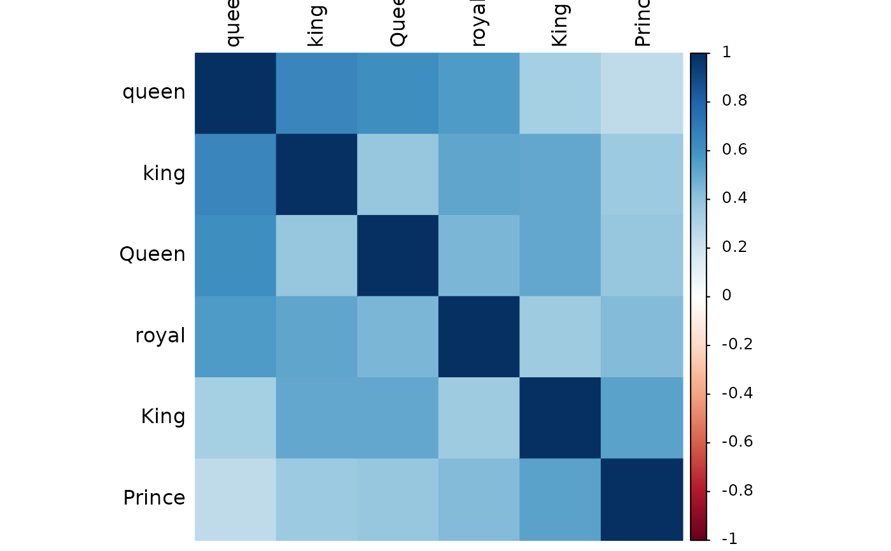
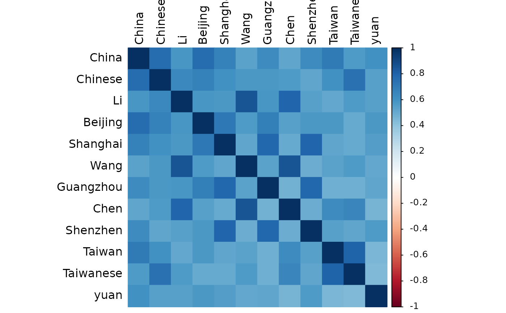

Reliability analysis (Cronbach's \(\alpha\) and average cosine similarity) and Principal Component Analysis (PCA) of a dictionary, with visualization of cosine similarities between words (ordered by the first principal component loading). Note that Cronbach's \(\alpha\) can be misleading when the number of items/words is large.
Usage
dict_reliability(
data,
words = NULL,
pattern = NULL,
alpha = TRUE,
sort = TRUE,
plot = TRUE,
...
)Arguments
- data
A
wordvec(data.table) orembed(matrix), seedata_wordvec_load.- words
[Option 1] Character string(s).
- pattern
[Option 2] Regular expression (see
str_subset). If neitherwordsnorpatternare specified (i.e., both areNULL), then all words in the data will be extracted.- alpha
Estimate the Cronbach's \(\alpha\)? Defaults to
TRUE. Note that this can be misleading and time-consuming when the number of items/words is large.- sort
Sort items by the first principal component loading (PC1)? Defaults to
TRUE.- plot
Visualize the cosine similarities? Defaults to
TRUE.- ...
Other parameters passed to
plot_similarity.
Value
A list object of new class reliability:
alphaCronbach's \(\alpha\)
eigenEigen values from PCA
pcaPCA (only 1 principal component)
pca.rotationPCA with varimax rotation (if potential principal components > 1)
itemsItem statistics
cos.sim.matA matrix of cosine similarities of all word pairs
cos.simLower triangular part of the matrix of cosine similarities
Download
Download pre-trained word vectors data (.RData):
https://psychbruce.github.io/WordVector_RData.pdf
References
Nicolas, G., Bai, X., & Fiske, S. T. (2021). Comprehensive stereotype content dictionaries using a semi-automated method. European Journal of Social Psychology, 51(1), 178--196.
Examples
d = as_embed(demodata, normalize=TRUE)
dict = dict_expand(d, "king")
#> ── Iteration 1 (threshold of cosine similarity = 0.5) ──────────────────────────
#> ✔ 3 more words appended: "queen", "royal", and "King"
#>
#> ── Iteration 2 (threshold of cosine similarity = 0.5) ──────────────────────────
#> ✔ 2 more words appended: "Queen" and "Prince"
#>
#> ── Iteration 3 (threshold of cosine similarity = 0.5) ──────────────────────────
#> ✔ No more words appended. Successfully convergent.
#>
#> ── Finish (convergent) ──
#>
dict_reliability(d, dict)
#> ! Results may be inaccurate if word vectors are not normalized.
#> ✔ All word vectors now have been automatically normalized.

#>
#> ── Reliability Analysis and PCA of Dictionary ──────────────────────────────────
#>
#> Number of items = 6
#> Mean cosine similarity = 0.459
#> Cronbach’s α = 0.836 (misleading when N of items is large)
#> Variance explained by PC1 = 55.2%
#> Potential principal components = 1 (with eigen value > 1)
#>
#> Cosine Similarities Between Words:
#> Min. 1st Qu. Median Mean 3rd Qu. Max.
#> 0.2584 0.3715 0.4588 0.4590 0.5273 0.6511
#>
#> Item Statistics:
#> ────────────────────────────────────────────────────
#> PC1 Loading Item-SumVec Sim. Item-Rest Corr.
#> ────────────────────────────────────────────────────
#> queen 0.785 0.769 0.650
#> king 0.781 0.772 0.653
#> Queen 0.760 0.755 0.631
#> royal 0.754 0.751 0.624
#> King 0.723 0.732 0.597
#> Prince 0.645 0.668 0.511
#> ────────────────────────────────────────────────────
#> PC1 Loading = the first principal component loading
#> Item-SumVec Sim. = cosine similarity with the sum vector
#> Item-Rest Corr. = corrected item-total correlation
dict.cn = dict_expand(d, "China", threshold=0.65)
#>
#> ── Iteration 1 (threshold of cosine similarity = 0.65) ─────────────────────────
#> ✔ 4 more words appended: "Chinese", "Beijing", "Taiwan", and "Shanghai"
#>
#> ── Iteration 2 (threshold of cosine similarity = 0.65) ─────────────────────────
#> ✔ 4 more words appended: "Guangzhou", "Taiwanese", "Shenzhen", and "Li"
#>
#> ── Iteration 3 (threshold of cosine similarity = 0.65) ─────────────────────────
#> ✔ 3 more words appended: "Wang", "Chen", and "yuan"
#>
#> ── Iteration 4 (threshold of cosine similarity = 0.65) ─────────────────────────
#> ✔ No more words appended. Successfully convergent.
#>
#> ── Finish (convergent) ──
#>
dict_reliability(d, dict.cn)
#> ! Results may be inaccurate if word vectors are not normalized.
#> ✔ All word vectors now have been automatically normalized.

#>
#> ── Reliability Analysis and PCA of Dictionary ──────────────────────────────────
#>
#> Number of items = 12
#> Mean cosine similarity = 0.596
#> Cronbach’s α = 0.946 (misleading when N of items is large)
#> Variance explained by PC1 = 63.0%
#> Potential principal components = 2 (with eigen value > 1)
#>
#> Cosine Similarities Between Words:
#> Min. 1st Qu. Median Mean 3rd Qu. Max.
#> 0.4474 0.5266 0.5666 0.5963 0.6395 0.8555
#>
#> Item Statistics:
#> ───────────────────────────────────────────────────────
#> PC1 Loading Item-SumVec Sim. Item-Rest Corr.
#> ───────────────────────────────────────────────────────
#> China 0.839 0.837 0.801
#> Chinese 0.823 0.822 0.781
#> Beijing 0.822 0.817 0.780
#> Li 0.818 0.819 0.778
#> Shanghai 0.817 0.815 0.775
#> Wang 0.793 0.793 0.749
#> Guangzhou 0.791 0.792 0.745
#> Chen 0.786 0.787 0.741
#> Shenzhen 0.781 0.783 0.735
#> Taiwan 0.773 0.775 0.726
#> Taiwanese 0.770 0.773 0.723
#> yuan 0.704 0.711 0.651
#> ───────────────────────────────────────────────────────
#> PC1 Loading = the first principal component loading
#> Item-SumVec Sim. = cosine similarity with the sum vector
#> Item-Rest Corr. = corrected item-total correlation
dict_reliability(d, c(dict, dict.cn))
#> ! Results may be inaccurate if word vectors are not normalized.
#> ✔ All word vectors now have been automatically normalized.
#>
#> ── Reliability Analysis and PCA of Dictionary ──────────────────────────────────
#>
#> Number of items = 18
#> Mean cosine similarity = 0.331
#> Cronbach’s α = 0.899 (misleading when N of items is large)
#> Variance explained by PC1 = 42.4%
#> Potential principal components = 4 (with eigen value > 1)
#>
#> Cosine Similarities Between Words:
#> Min. 1st Qu. Median Mean 3rd Qu. Max.
#> -0.06071 0.07339 0.38084 0.33065 0.56430 0.85546
#>
#> Item Statistics:
#> ───────────────────────────────────────────────────────
#> PC1 Loading Item-SumVec Sim. Item-Rest Corr.
#> ───────────────────────────────────────────────────────
#> China 0.832 0.741 0.695
#> Chinese 0.821 0.751 0.705
#> Li 0.819 0.763 0.719
#> Beijing 0.818 0.743 0.699
#> Shanghai 0.812 0.741 0.695
#> Wang 0.794 0.742 0.695
#> Chen 0.789 0.747 0.702
#> Guangzhou 0.786 0.714 0.663
#> Taiwan 0.774 0.723 0.673
#> Taiwanese 0.772 0.726 0.676
#> Shenzhen 0.772 0.685 0.630
#> yuan 0.697 0.631 0.569
#> royal 0.178 0.406 0.329
#> Queen 0.154 0.392 0.308
#> king 0.141 0.382 0.302
#> King 0.127 0.361 0.277
#> queen 0.124 0.364 0.286
#> Prince 0.085 0.305 0.218
#> ───────────────────────────────────────────────────────
#> PC1 Loading = the first principal component loading
#> Item-SumVec Sim. = cosine similarity with the sum vector
#> Item-Rest Corr. = corrected item-total correlation
# low-loading items should be removed